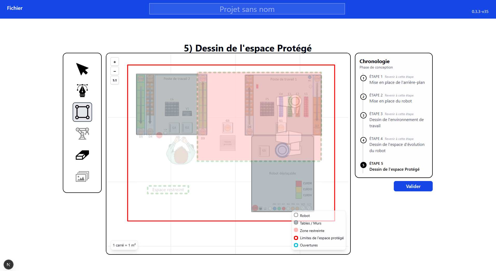
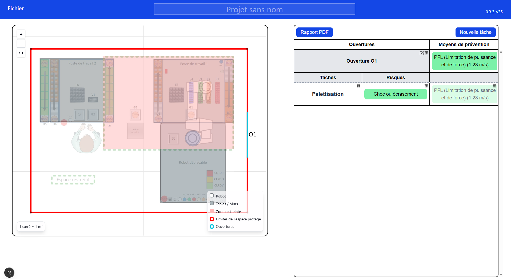
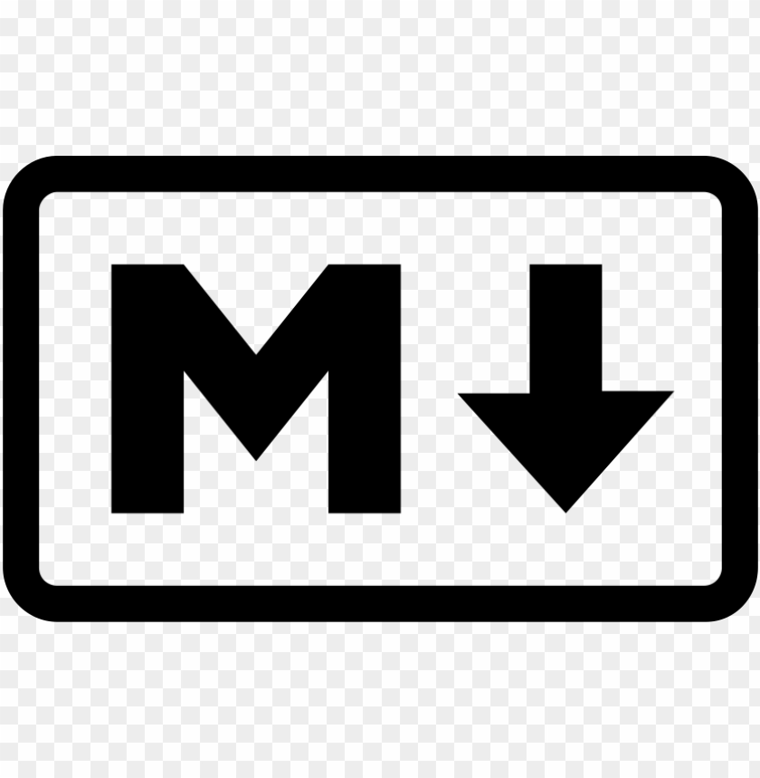

Présentation de l'application robotique collaborative
L'application robotique collaborative développée est une solution web permettant de concevoir et de simuler l'architecture d'une cellule de travail en 2D. Elle offre aux intégrateurs la possibilité de concevoir leurs zones de travail via un canvas interactif possédant un arrière plan (optionnel) , le robot , des tables , la zone restreinte du robot et l'espace protégé.
À la fin de la conception de ce schéma, ISARC se poursuit vers une phase d'identification des risques avec la création des ouvertures sur les limites de l'espace protégé (grilles). Une fois les tâches affectées à ces ouvertures, l'intégrateur est guidé à travers un arbre de décision interactif pour évaluer les risques et déterminer les mesures de prévention adéquates.
L'application se concentre spécifiquement sur les risques mécaniques :
En fonction de la tâche et de la configuration, ISARC propose les moyens de prévention suivants :
Note : Les risques autres que mécaniques (chimiques, biologiques...) sont pris en compte dans les risques mais requièrent des mesures spécifiques à renseigner par l'intégrateur, ils sont hors du graphe décisionnel.
Aperçu de l'application


Stack technique
| Frameworks / Langages | Description |
|---|---|
|
|
ReactBibliothèque JavaScript pour construire des interfaces utilisateur. Elle permet de créer des composants réutilisables et de gérer efficacement l'état de l'application. C'est le fondement de notre application qui possède de nombreux composants interactifs et dynamiques. |
|
|
Next.jsFramework basé sur React qui permet de créer des applications web performantes avec une gestion efficace de l'état et des routes. |
|
|
TypeScriptOffre un typage statique qui aide à prévenir les erreurs courantes avant l'exécution et rend le code de calcul géométrique beaucoup plus fiable, robuste et maintenable. |
| Librairies | Description |
|---|---|
React KonvaLibrairie basée sur le Canvas HTML5. Elle permet de créer et de manipuler graphiquement des formes complexes, elle est cruciale pour le rendu visuel des éléments graphiques. |
|
@react-pdf/rendererRemplaçant l'ancienne solution jsPDF, cette librairie permet de générer des rapports PDF complets directement côté client en décrivant l'interface sous forme de composants React. Cela a permis de concevoir un système de mise en page dynamique, capable de gérer par exemple les sauts de page automatiques. |
|
ZustandGère l'état global et les "stores" de l'application. C'est notamment grâce à Zustand
qu'est
implémenté le système d'historique ( |
|
|
 |
react-markdownInterprète et convertit les textes au format Markdown en vrais composants React. Dans notre cas, elle permet d'afficher dynamiquement les détails de moyens de prévention avec une mise en page propre (gras, listes à puces) sans avoir à écrire du HTML brut. |